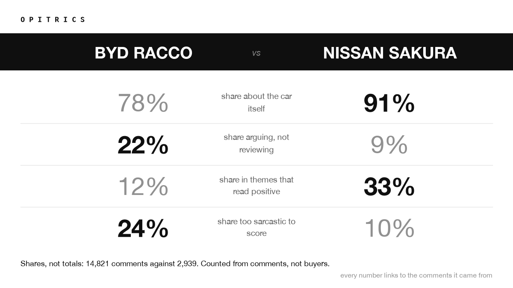
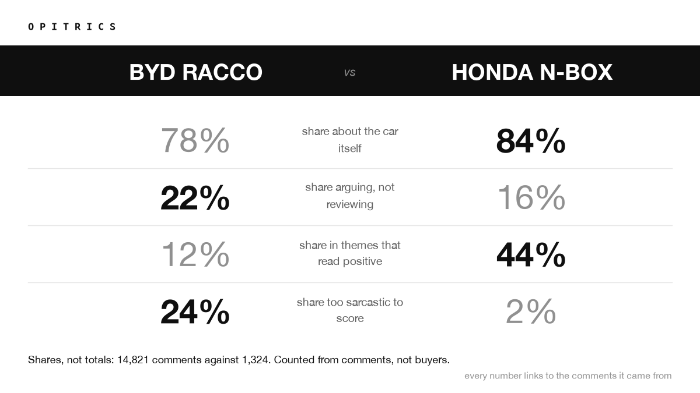

4 corpora · 21,833 comments analysed
Four kei cars, four comment sections, the same four questions asked of each. The BYD Racco sits at the extreme of all four, and on two of them it is clear of the other three by more than they differ from each other. It is also the only car here that is not Japanese.
Every figure is a share of that car's own clustered comments. Follow a car's name to the analysis and the comments behind it.
| car | comments | about the car | arguing | reads positive | unscorable |
|---|---|---|---|---|---|
| BYD Racco | 14,821 | 78% | 22% | 12% | 24% |
| Nissan Sakura | 2,939 | 91% | 9% | 33% | 10% |
| Suzuki e Sky | 2,749 | 89% | 11% | 38% | 7% |
| Honda N-Box | 1,324 | 84% | 16% | 44% | 2% |
Bold marks a car that sits clear of the other three on that measure — extreme, not merely highest. About the car is the share on the vehicle rather than the video or its presenter. Arguing is the remainder. Reads positive and unscorable are shares of comments in themes scored positive, and in themes flagged too sarcastic to score.
Three of these cars produce a comment section about a car. The fourth produces an argument about where it was built. A fifth of the Racco's comments are not about the vehicle at all, and a quarter are too sarcastic to score — that sarcasm share is ten times the N-Box's, and the positive share is under a third of it.
The two clear results are sentiment, not subject matter. On how much of the conversation is about the car, the Racco leads but the three Japanese cars differ among themselves by as much, so that gap is not doing the work. What separates the Racco is how its comment section talks, not what it talks about.
That is the finding no single corpus gives you: not that the Racco is disliked, but that it is argued about in a way its rivals are not.

